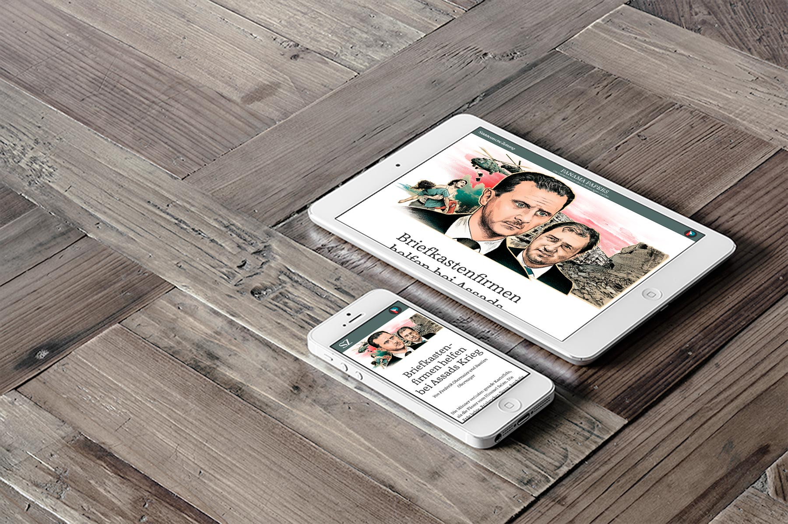

layout: true class: slides-centered --- layout: true class: theme-whiskey, slides-left --- name: cover # NodeSchool Augsburg (09/2016) Carsten Meier<br> [@acidicX](https://github.com/acidicX) Sebastian Huber<br> [@Blacklist](https://github.com/Blacklist) <img id="slide-cover-img" src="./assets/peerigon-logo.png" width="400"> --- class: slides-chapter, theme-whiskey ## NodeSchool --- layout: true class: slides-centered, theme-whiskey --- <div style="text-align: center; font-weight: bold">NodeSchool: was war das doch gleich?</div> <ul> <li>lerne JavaScript</li> <li>und die Basics von Node.js</li> <li>und ein wenig über das JavaScript-Universum (z.B. Open Source-Module)</li> </ul> --- class: slides-chapter, theme-whiskey ## NodeSchool by Peerigon --- layout: true class: slides-image-slider, theme-whiskey --- <div style="text-align: center; font-weight: bold">Wir machen JavaScript.</div> <div class="image-slider">  </div> --- layout: true class: slides-centered, theme-whiskey --- <div style="text-align: center; font-weight: bold">Wir stehen zu unseren Prinzipien</div> <ul> <li>#6: Wir lieben Open Source.</li> <li>#7: Unser Wissen geben wir weiter.</li> </ul> <p>… aus dem <a href="https://peerigon.com/de/manifest" target="blank">Peerigon Manifest</a></p> --- class: slides-chapter, theme-whiskey ## Back to business! --- <div style="text-align: center; font-weight: bold">Wer kann schon JavaScript?</div> ```javascript const niceTools = ['webpack', 'babel', 'eslint', 'updtr']; for (let i = 0; i < niceTools.length; i++) { console.log(niceTools[i]); } ``` --- <div style="text-align: center; font-weight: bold">Und Node.js?</div> ```javascript http.get(process.argv[2], function (response) { response.setEncoding('utf8') response.on('data', console.log) response.on('error', console.error) }).on('error', console.error); ``` --- Cool! --- <div style="text-align: center; font-weight: bold">Folgende Tools werdet ihr brauchen:</div> <ul> <li>Einen Editor eurer Wahl (z.B. <a href="https://atom.io/" target="_blank">Atom</a>)</li> <li><a href="https://nodejs.org" target="_blank">Node.js v6</a></li> <li>Die <a href="http://nodeschool.io/de/" target="_blank">NodeSchool-Kurse</a></li> <li>Die <a href="https://nodejs.org/dist/latest-v6.x/docs/api/" target="_blank">Node.js Dokumentation</a></li> </ul> --- <div style="text-align: center; font-weight: bold">WiFi</div> <p><span style="font-weight: bold;">SSID:</span> peerigon-guest(-5)</p> <p><span style="font-weight: bold;">Password:</span> be-together</p> --- <div style="text-align: center; font-weight: bold">Jetzt könnt ihr loslegen!</div> <p>Alternativ gibt es noch ein paar technische Details zu Node und dem Node-Universum und ECMAScript 2015 (der <strike>neuen</strike> aktuellen JavaScript-Version)</p> --- <div style="text-align: center; font-weight: bold">Node.js</div> <p><a href="https://image.slidesharecdn.com/wherenode-140123132101-phpapp02/95/where-nodejs-meets-ios-54-638.jpg" target="_bank">Codebase Übersicht</a></p> --- <div style="text-align: center; font-weight: bold">ES2015</div> <p><a href="https://peerigon.github.io/talks/2016-01-28-webundspeck-future-of-javascript/#32" target="_bank">Talk von @meaku</a></p> --- <div style="text-align: center; font-weight: bold">Slides sind online:</div> <p><a href="https://peerigon.github.io/talks/2016-09-10-NodeSchool-Augsburg" target="_bank">auf GitHub</a></p> ```javascript http://bit.ly/2ch3F9I ```